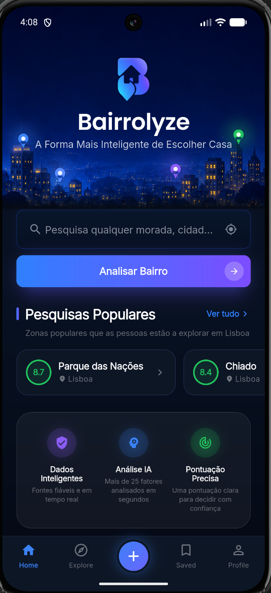
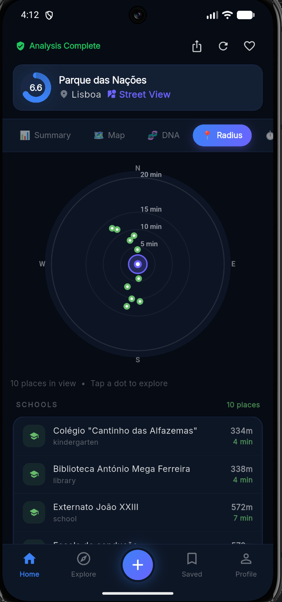
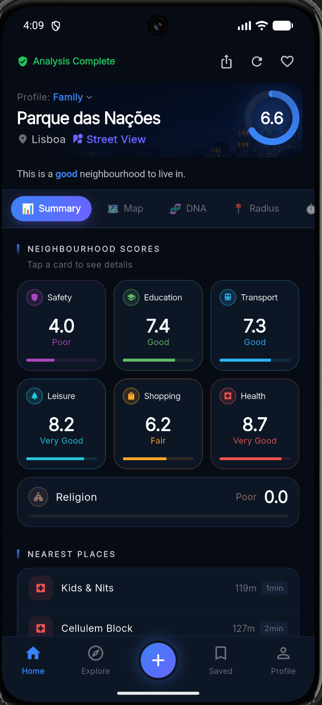
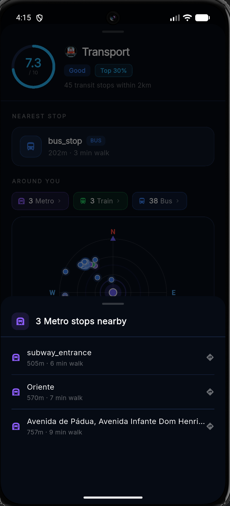
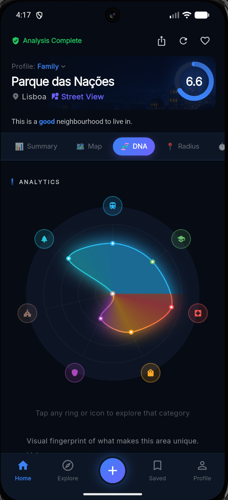
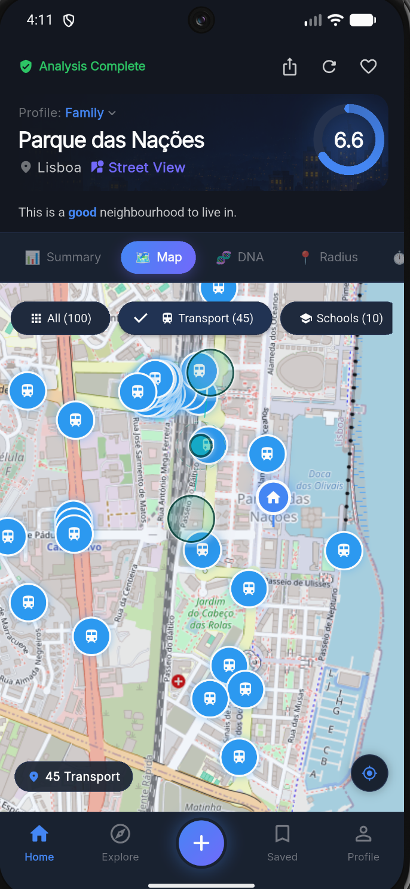
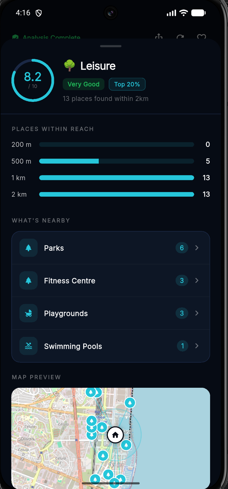

Bairrolyze scores any address on the things that actually shape daily life — safety, schools, transport, health, leisure and more — using live map data. One clear number, and the full story behind it.
Free to try · No account needed · Portugal-first, expanding across Europe



Bairrolyze does the digging — schools, hospitals, transport, parks and more — and turns it into something you can actually decide with.
A clear /10 for any address, tuned to who you are — family, student, professional, retired or investor. Below it, seven category scores you can tap to explore.

Transport pulls live data from OpenStreetMap: the exact stops around an address, split by metro, train and bus, each with real walking time and distance — not a vague “good transport links”.
A visual fingerprint of the neighbourhood’s strengths and weaknesses across every category, so two areas with the same score still feel completely different.


See all 100+ nearby places on one interactive map. Filter by transport, schools, health and more to understand exactly what’s within reach.
Open any category to see exactly what’s within reach: how many places sit within 200 m, 500 m, 1 km and 2 km, each one named with its real walking time — plus a mini-map of where they are.

Type a street, a neighbourhood or a whole city — anywhere in Portugal.
Bairrolyze scans schools, transport, health, parks, shops and safety around it — live.
A clear /10, category breakdowns, an AI summary and every place on the map.
Weighted differently for each lifestyle profile, so the score reflects your priorities.
Bairrolyze is free to try — no account, no hassle.